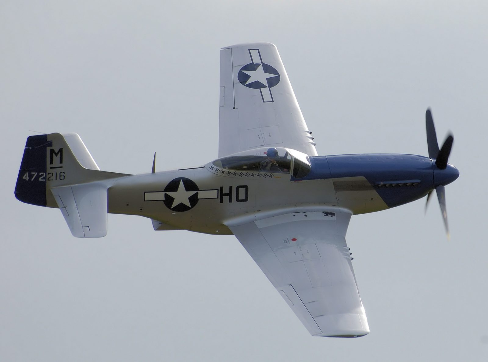
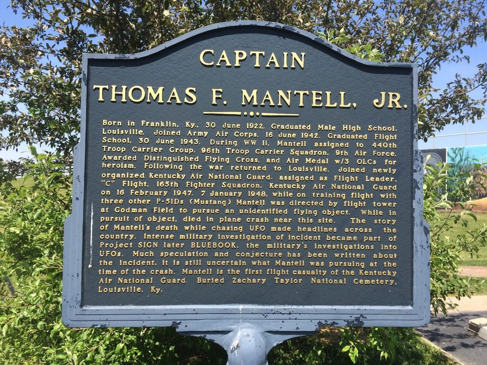
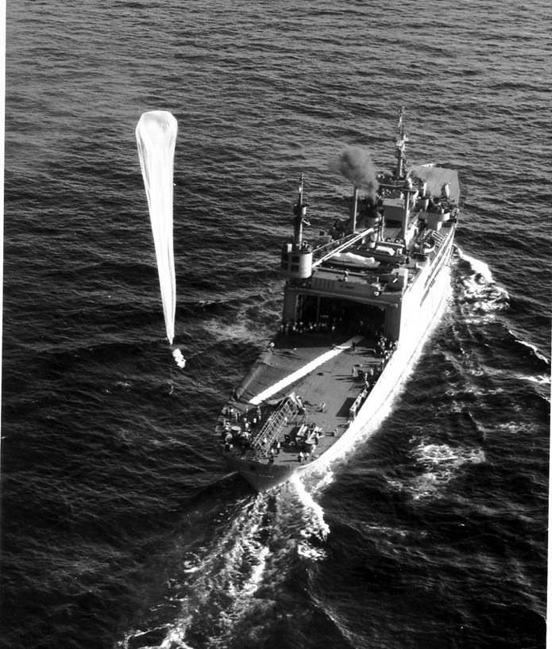

On a clear Kentucky afternoon in January 1948, a decorated WWII pilot named Thomas Mantell climbed his P-51 Mustang toward a massive metallic object hanging in the sky over Fort Knox. His three wingmen turned back: no oxygen equipment above 20,000 feet. Mantell kept climbing. His last radio words described something enormous and metallic. He never leveled off, and he never came home. Over the next four years, the U.S. Air Force would offer three different explanations for what he died chasing: Venus, then a weather balloon, then a secret Navy balloon, and never fully put the question to rest.
All times in this case file are local Central Time, January 7, 1948. The object was seen independently by multiple, unconnected witnesses across a large stretch of Kentucky before anyone at Godman Field ever laid eyes on it themselves.
At 13:15, Godman Army Airfield at Fort Knox received a call relayed from the Kentucky Highway Patrol: officers and civilians near Maysville, in the northeastern part of the state, were reporting a strange object in the sky. A second call at 13:35 described it as circular, roughly 250 to 300 feet in diameter, moving west at a good clip, a description utterly unlike any conventional aircraft.
At 13:45, the assistant chief and then the chief operator of the control tower at Godman Field stepped outside and saw it for themselves: a large, round, seemingly stationary object, visible to the naked eye, hanging in the southern sky. Tower personnel later stated they were certain it was neither an aircraft nor a weather balloon they recognized. Base commander Colonel Guy Hix and other officers came out to look as well. Whatever it was, it was being seen, independently, by trained military personnel on the ground and civilians across a wide stretch of the state at almost the same time.
It was a beautiful, clear day… the object was directly south of the tower and I would judge, six to ten miles distant. It was very white, and to me appeared to have a red border at the bottom.
— Description consistent with contemporaneous statements from Godman Field tower personnel, January 7, 1948By pure chance, help was already in the air. Four F-51D Mustangs of C Flight, 165th Fighter Squadron, Kentucky Air National Guard, happened to be transiting nearby en route to Standiford Field in Louisville when Godman's tower radioed them.
Leading the flight was Captain Thomas F. Mantell Jr., 25 years old. He was not a rookie chasing a thrill. Mantell was a combat-tested WWII veteran, holder of the Distinguished Flying Cross for flying a C-47 named “Vulture's Delight” through heavy anti-aircraft fire to tow gliders into Normandy on D-Day, June 6, 1944. He'd logged roughly 2,867 flight hours, much of it in combat conditions, and had joined the Kentucky Air National Guard less than a year earlier. Flying with him were three other pilots, including Lieutenants Albert Clements and B.A. Hammond; a fourth pilot, Lieutenant Hendrichs, continued on toward Standiford rather than divert.
Godman's tower asked Mantell's flight to investigate the object. Mantell agreed, and the three pilots peeled off to climb toward it, leaving their original flight plan behind. None of the aircraft carried supplemental oxygen equipment rated for sustained flight above roughly 20,000 feet, standard for a routine ferry flight, entirely inadequate for what came next.

What began as a routine intercept turned, within minutes, into a race against physiology that only one pilot chose to keep running.
Mantell radios that he has the object in sight above him and is continuing to climb. His three wingmen are still with him, all breathing ambient air with no supplemental oxygen.
Lieutenants Clements and Hammond call off the pursuit around 22,000 to 22,500 feet, the altitude at which unpressurized flight without oxygen becomes genuinely dangerous, causing impaired judgment and, eventually, unconsciousness. They attempt to raise Mantell by radio to tell him to level off. He does not reply that he will.
Alone now, Mantell keeps climbing after the object. Whatever he was seeing, he judged it worth the risk his training should have told him not to take. See Last Transmission below for his final words.
Radio contact with Mantell's aircraft ends. Investigators later concluded he lost consciousness from hypoxia (oxygen starvation) likely somewhere between 25,000 and 30,000 feet, with his Mustang continuing to climb briefly under its own momentum before entering an uncontrolled spiral toward the ground.
The line most associated with this case, repeated in nearly every retelling for more than seventy years, carries a complication few of those retellings mention.
It appears to be a metallic object of tremendous size…
— Attributed to Captain Thomas Mantell, final radio transmission, January 7, 194825 years old · Distinguished Flying Cross, WWII
He climbed toward something he couldn't identify, and didn't turn back.
Captain Edward J. Ruppelt, who later ran the Air Force's UFO investigation and had direct access to the case file, wrote that no one actually in the Godman tower could recall Mantell ever radioing a description of the object at all, meaning the famous “metallic object of tremendous size” line, as it's usually quoted, may have been assembled after the fact by writers covering the case rather than transcribed verbatim from a recording. No audio recording of Mantell's transmissions is known to survive; what exists are secondhand recollections written down after the fact by tower personnel and investigators.
That doesn't mean Mantell said nothing. Witnesses agree he described something large and metallic in general terms as he climbed. It means the precise, oft-quoted wording has never been verified against a primary recording, and probably never can be. We've used the commonly cited version here because it's the version this case is known by, while flagging plainly that its exact wording is disputed.
At 15:50, Godman's tower received word: Mantell's P-51 had gone down on a farm south of Franklin, Kentucky, roughly 90 miles from where he'd first climbed after the object.
The Mustang had broken apart before impact, scattering wreckage across roughly a mile of farmland, consistent with an aircraft that entered a high-speed spiral or dive after its pilot lost consciousness, rather than one that struck the ground under control. Mantell was killed instantly. He left behind his wife, Peggy, and two young sons.
The Army's official finding was straightforward and, on the mechanical question, largely undisputed since: Mantell had climbed too high, too fast, without oxygen equipment rated for the altitude, blacked out from hypoxia, and his aircraft spiraled down out of control. What killed him, in other words, was never seriously in question. What he was chasing when it happened was a different matter entirely. And that's where the story gets complicated.

Over the four years that followed, the U.S. military gave three distinct, and at times contradictory, public explanations for what Mantell had actually died chasing. Here they are, in the order they were actually given.
The Army's earliest public statements pointed to a conventional weather balloon, the standard, reassuring explanation reached for in the early UFO era. It satisfied almost no one who had actually seen the object: weather balloons of the period were nowhere near large enough to match witness descriptions of something 250 to 300 feet across, and Godman's own tower personnel had already stated on the day of the sighting that they didn't believe it was a balloon they recognized.
Astronomer J. Allen Hynek, consulting for the newly formed Project Sign, initially concluded Mantell may have mistaken the planet Venus, which was above the horizon that afternoon, for the object. Hynek himself later withdrew this explanation, stating plainly that Venus would not have been bright enough in the afternoon sky, given the haze reported that day, to be seen by Mantell or the several ground witnesses who independently described a large, defined object rather than a point of light.
In 1952, a Project Blue Book reassessment concluded Mantell had been chasing a Navy Skyhook balloon, a classified, high-altitude research balloon that could reach 100,000 feet, made of reflective metallic-look material, and large enough at certain altitudes to plausibly match witness descriptions. Skyhook balloons were secret at the time of the crash; Godman's tower personnel and Mantell himself would have had no way to know such a thing existed. This remains the Air Force's official explanation today.
The Skyhook explanation has one persistent hole: no confirmed launch record has ever been publicly produced showing a Skyhook balloon over Kentucky on January 7, 1948. An Air Force officer looking into the case years later reportedly said records “would show whether or not a balloon was launched from Clinton County, Ohio, on January 7th, 1948,” and then admitted he could never actually find them. The explanation is plausible and widely accepted. It has also never been definitively documented.

Somewhere in the archives of the Air Force or the Navy there are records that will show whether or not a balloon was launched… I never could find these records.
— Air Force officer investigating the case, recounted years laterThe mechanical cause of Mantell's death (hypoxia at altitude) has never seriously been in dispute. Everything around it still generates real disagreement among people who've studied the case closely.
Each shift followed the same pattern: an explanation was offered, someone pointed out it didn't fit the evidence, and a new one replaced it. That's either exactly how careful, self-correcting investigation is supposed to look, or exactly what it looks like when an agency keeps reaching for a plausible-sounding answer under public pressure to have one at all. Both readings are defensible from the same public record, which is precisely why this case remains contested.
Multiple, geographically scattered witnesses (Kentucky Highway Patrol officers, civilians near Maysville, Godman's own control tower staff) described a large, defined, seemingly stationary or slow-moving object well before any of them could have coordinated a story. Skyhook balloons, drifting at high altitude, could plausibly account for a stationary light seen from a great distance by multiple separated observers, one of the stronger points in that explanation's favor, even without a confirmed launch record.
No one will ever know for certain. He was a decorated combat pilot used to pressing forward under fire, not someone inclined to break off a pursuit he'd been specifically asked to make. Whether that was professional determination, genuine excitement at what he believed he was seeing, or the earliest, hardest-to-notice effects of the same hypoxia that would kill him minutes later, is a question his own wingmen couldn't answer then and no one can answer now.
As explained in Last Transmission above, Ruppelt's own account casts real doubt on whether “metallic object of tremendous size” was ever actually said, verbatim, over the radio. It has been repeated so often, in so many retellings, that its uncertain origin is rarely mentioned at all, itself a small case study in how a case's popular version can drift from its documented one.
Every fact in this case file was cross-referenced against at least two independent sources, anchored by official Air Force investigation records and Captain Edward Ruppelt's firsthand account. All links open in a new tab.
Digitized original U.S. Air Force case files, including the Mantell incident, from the Project Sign, Project Grudge and Project Blue Book archives.
The federal government's official guide to the surviving Project Blue Book records, including case-specific investigation files.
An official U.S. Army retrospective on the incident, published for its 75th anniversary, drawing on Army and Air Force records.
A detailed aviation-history account of Mantell's WWII service record, decorations and the circumstances of his death.
A detailed retrospective on the Skyhook balloon explanation and its supporting and disputing evidence.
Used as a secondary cross-reference for dates, figures and the sequence of official explanations; every fact drawn from it was checked against a primary or independent source above.